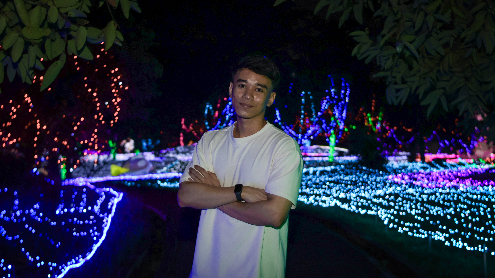

WEB DEVELOPMENT / PHOTOGRAPHY
Photography Portfolio Website
A personal photography website showcasing my work through a clean, responsive design, with a focus on composition, lighting, and visual storytelling.
HEY, I'M DARRYL — JUST A TECH NERD 🤓
I'm a third-year Network Computing student at UNIMAS with a Diploma in Electronic Engineering (Communication). Passionate about technology, I enjoy exploring how things work, learning new skills, and expressing my creativity through photography and visual storytelling.

01 / A LITTLE ABOUT ME
My background combines Network Computing and Electronic Engineering (Communication), with an interest in how technology solves real-world problems. Outside of computing, I enjoy photography, exploring composition, lighting, and visual storytelling.
I'm looking forward to applying what I've learned, developing hands-on technical skills, and learning from professionals in a real-world environment.
02 / THINGS I'VE WORKED ON
A collection of academic work, technical exercises, and personal projects that combine my interests in technology, problem-solving, and creativity.
WEB DEVELOPMENT / PHOTOGRAPHY
A personal photography website showcasing my work through a clean, responsive design, with a focus on composition, lighting, and visual storytelling.
NETWORKING / SYSTEMS
Replace this section with a genuine networking project, lab exercise, or academic assignment. Describe the problem, tools used, and what you learned.
SOFTWARE / TECHNICAL
Showcase another genuine project, programming assignment, virtual machine lab, or personal technical experiment.
More projects will be added as I continue learning and building.
03 / LET'S CONNECT
I'm looking forward to connecting with people in the technology industry and exploring internship opportunities where I can learn, contribute, and grow.